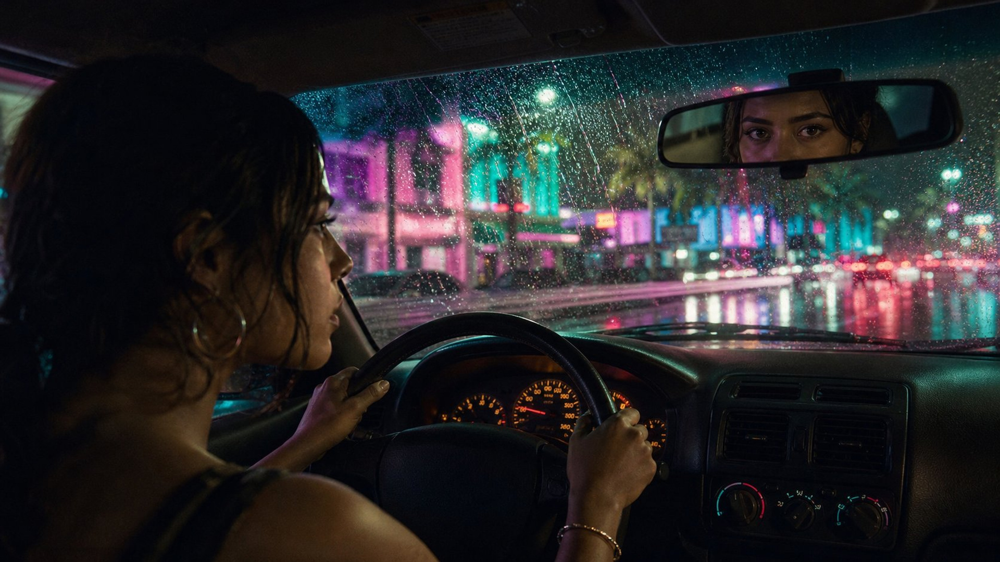

S4 · G2 · Portrait
Lucia
Caminos
Première protagoniste féminine jouable d'un GTA principal : sortie de pénitencier, chevillère électronique et un plan qu'elle ne compte pas lâcher. Voici ce que Rockstar écrit, ce que la démo montre, et ce que la presse vérifie — chaque ligne avec son statut.
Biographie officielle
Trois phrases de Rockstar suffisent à cadrer le personnage, et ce sont les seules formulations présentées ici comme officielles.
CHA-19« Le père de Lucia lui a appris à se battre dès qu'elle a su marcher. » Défendre sa famille l'a menée au pénitencier de Leonida ; la chance l'en a sortie ; « désormais, uniquement des choix intelligents ».CHA-20Elle veut la belle vie dont sa mère rêvait depuis leurs années à Liberty City — et refuse de se contenter de fantasmes.CHA-22Réplique officielle publiée : « The only thing that matters is who you know and what you got. »CHA-26Âge, nationalité et motif exact de l'incarcération ne sont pas communiqués ; Liberty City est un lieu de vie familial, pas officiellement un lieu de naissance.CAST-14La chevillère électronique n'est pas décorative : elle pèse sur le récit et sert de point de départ au rapprochement avec Jason. PRESSE · 18/11
CHA-19, CAST-14.Santé, endurance, Focus : les trois jauges
GTA VI assume sa simulation : les deux protagonistes ont trois statistiques de base, et les gestes du quotidien les font monter. GameSpot et IGN décrivent la même boucle, testée sur la version de presse.
| Stat | Effet | Comment la monter | Durée du gain |
|---|---|---|---|
| Santé | Résistance aux dégâts, régénération | Musculation (haltérophilie, soulevé de terre, kettlebells) | Entretien régulier |
| Endurance | Sprint, natation, durée des combats | Cardio : tapis, vélo, course, kayak, paddle | Entretien régulier |
| Focus | Temps de ralenti en visée, surbrillance des objets | Activités « mindfulness » : pêche, billard, caresser un chat | Permanent une fois acquis |
CAST-15
Salle de sport : la routine qui paie
La salle est optionnelle, mais c'est le meilleur retour sur investissement des premières heures. La mécanique est la même pour Jason et pour Lucia — et une seule visite à deux fait travailler les deux personnages.
La bonne exécution
Appuyer sur les deux gâchettes rapidement, relâcher lentement. Terminer la série avant la fin de l'endurance ; rater le rythme coûte plus d'endurance. Le soulevé de terre est rapide, les kettlebells ont un bon tempo.
L'anneau à fermer
Chaque personnage a une app de fitness qui suit la séance. On s'arrête quand l'anneau est fermé, puis on prend une barre ou un shaker protéiné pour verrouiller les gains. La fenêtre se rouvre environ une fois par jour in-game.
Le raccourci à deux
Y aller ensemble fait travailler Lucia et Jason, quel que soit le personnage joué. C'est le moyen le plus rapide de tenir deux corps à niveau sans doubler le temps passé en salle.
CAST-15
Conduite, combat et Focus en pratique
La démo de gameplay et les 69 détails relayés par IGN donnent une image claire : Lucia est aussi à l'aise au volant qu'avec une arme, et le Focus est l'outil transversal du duo.
Au volant
- Dans la poursuite à six étoiles montrée par Rockstar, c'est Lucia qui conduit pendant que Jason tire.
CAST-16 - En voiture à deux, on peut changer de siège et laisser l'autre conduire pour écouter la radio.
- Les véhicules ont alarme, traceur et antidémarrage : le clonage de clé arrive plus tard dans l'histoire.
Au combat
- Rechargement d'un fusil à pompe d'une seule main, corps à corps appuyé par la biographie.
CAST-16 - Le Focus (L3 + R3) ralentit le temps en visée et surligne en rouge les ennemis à travers les murs.
- Hors combat, le Focus fonctionne sans limite : objets interactifs en jaune, argent en vert, traces d'animaux visibles.
TIP-01

Le duo et la romance optionnelle
Officiellement, la relation est au cœur du récit mais n'est pas obligatoire : le partenariat criminel suffit à finir l'histoire. Ce qui change, c'est la façon dont certaines scènes se déroulent.
Ce qui construit le lien
- Passer du temps ensemble hors mission : exploration, shopping, salon de coiffure, sport à deux, braquages.
- Gestes du quotidien : se tenir la main, regarder la télévision ensemble, un baiser sur la joue.
- Les cibles de braquage peuvent être attaquées seul ou en couple ; le faire à deux compte pour la relation.
Ce qui se passe si on ignore
- La relation se dégrade si le joueur ne répond pas aux appels ni aux messages et ne passe pas de temps avec l'autre.
CHA-16 - Le récit ne bloque pas : le duo se couvre toujours mutuellement dans les missions principales.
- La proximité à certains moments influe sur la manière dont l'histoire se déroule.
CHA-23
Théories non vérifiées, à ne pas lire comme des faits
- Une vengeance familiale contre un cartel : récit de leakers, jamais confirmé. ESTIMATION
- Une trahison temporaire de Lucia envers Jason : hypothèse communautaire. PRESSE · 18/11
- Un « tir de précision au ralenti » comme capacité dédiée : non confirmé par Rockstar.
CHA-24
Ces trois points sont conservés uniquement pour être explicitement écartés du contenu affirmatif, comme sur la page Histoire.
Distribution et zones d'ombre
Rockstar n'a publié aucune liste de comédiens au 18 novembre 2026. Deux intérimaires sont confirmés à l'antenne, le reste est rapporté ou démenti.
| Rôle | Comédien | Statut | Référence |
|---|---|---|---|
| Lucia Caminos | Manni L. Perez | PRESSE · 18/11 | CAST-09 |
| Brian Heder | Stephen Root | PRESSE · 18/11 | CAST-08 |
| Rôle non identifié | Jim Santangeli | PRESSE · 18/11 | CAST-08 |
| Jason Duval | Non annoncé (Dylan Rourke cité) | PRESSE · 18/11 | CAST-10 |
| Méndez | John Ortiz (rapporté) | PRESSE · 18/11 | CAST-11 |
CAST-10